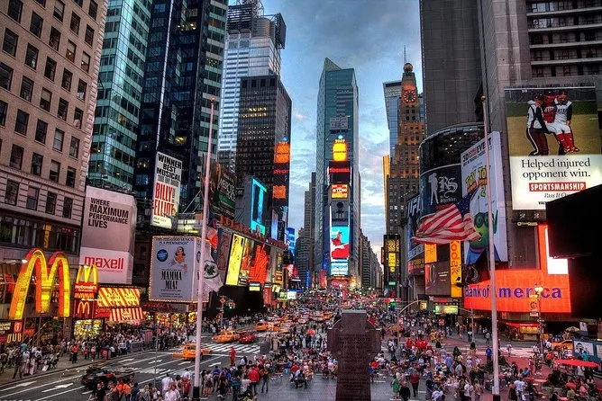

Uma página artilhada com eventos
Explora a página com o rato e vê as alterações nos elementos.
Contador de cliques
Carrega no botão para contar as tuas visitas.
A cidade que nunca pára
Passa o rato pela fotografia e descobre as mensagens.

Duplo clique para iluminar
Passa o rato por este cartão ou faz duplo clique para mudar o seu aspeto.